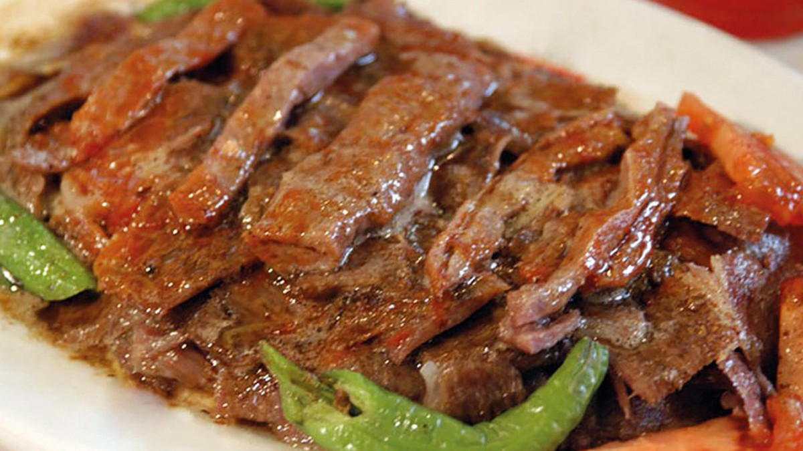

How to Make an Iskender Kebab

Ingredients
- 4 pita bread rounds
- 1 tablespoon olive oil
- 4 skinless, boneless chicken breast halves - chopped
- 2 medium onion, chopped
- 1 clove garlic, minced
- 1 (10.75 ounce) can tomato puree
- ground cumin to taste
- salt to taste
- ground black pepper to taste
- ½ cup butter, melted
- 1 cup Greek yogurt
- ¼ cup chopped fresh parsley
Steps
- Preheat oven to 350 degrees F (175 degrees C). Arrange pita bread on a baking sheet, and lightly toast in the oven. Cut pita bread into bite-size pieces, and keep warm.
- Heat the olive oil in a skillet over medium heat. Stir in the chicken, onion, and garlic, and cook until chicken juices run clear. Mix in tomato puree. Season with cumin, salt, and pepper. Continue cooking 10 minutes.
- Arrange pita pieces in a serving dish. Drizzle with butter, and top with the chicken mixture. Garnish with yogurt and parsley to serve.